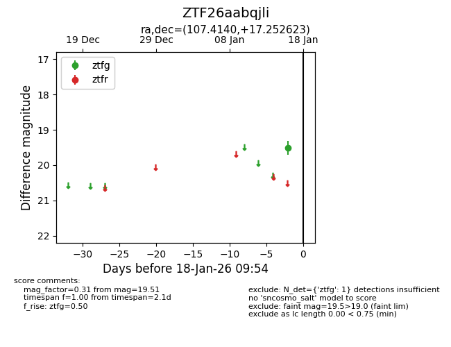
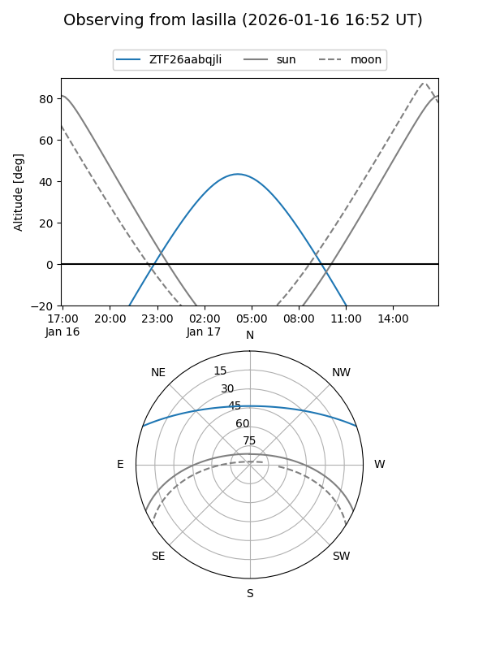
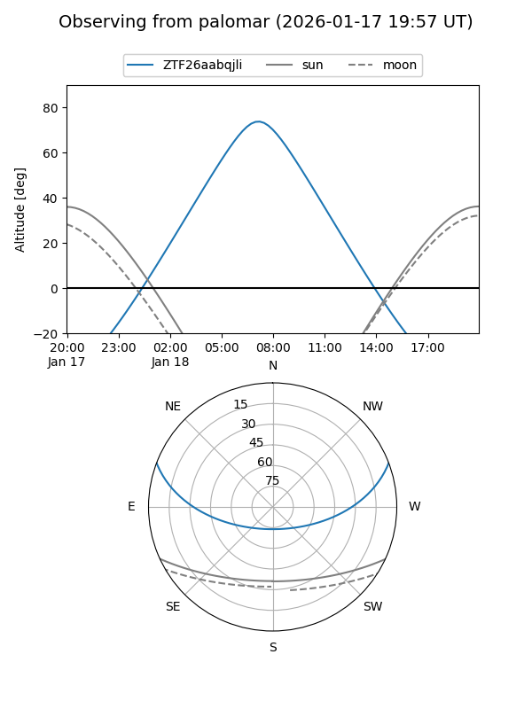

ZTF26aabqjli
Target ZTF26aabqjli at 2026-01-18 09:55
Aliases and brokers:
FINK: link
Lasair: link
ALeRCE: link
alt names
ZTF26aabqjli (ztf,fink_ztf)
Coordinates:
equatorial (ra, dec) = 107.4140,+17.25262
equatorial (HMS+DMS) = 07:09:39.35,+17:15:09.44
galactic (l, b) = (199.3850,+11.69662)
Flags:
Photometry:
last ztfg=19.51
1 ztfg detections
Lightcurve

Visibility


Additional plots